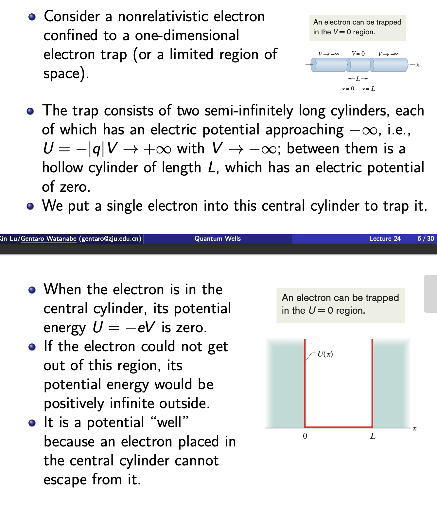
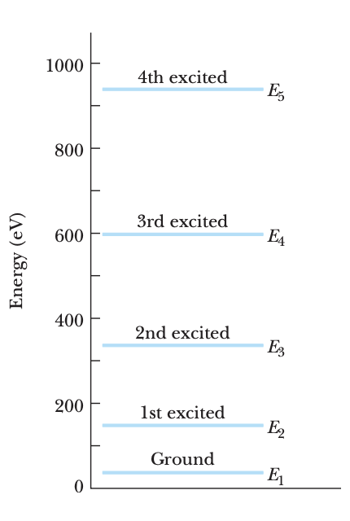
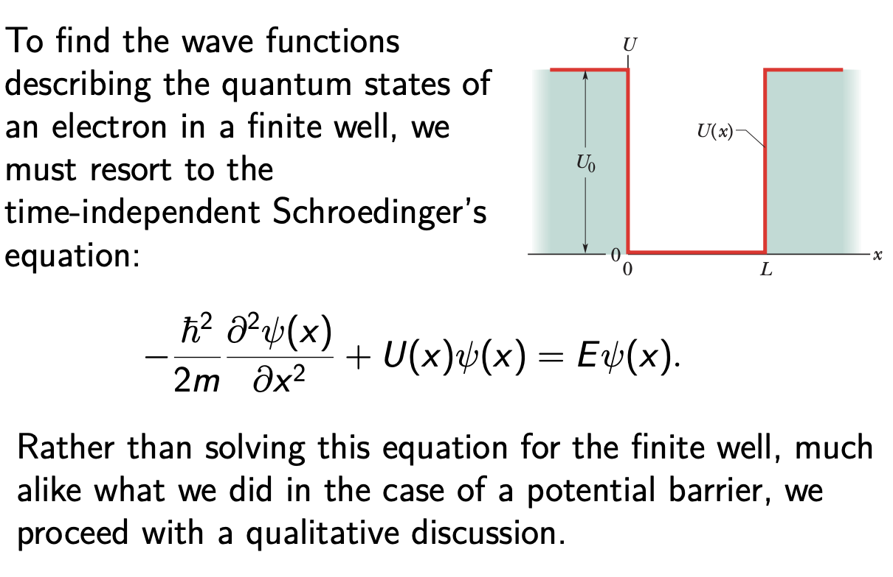
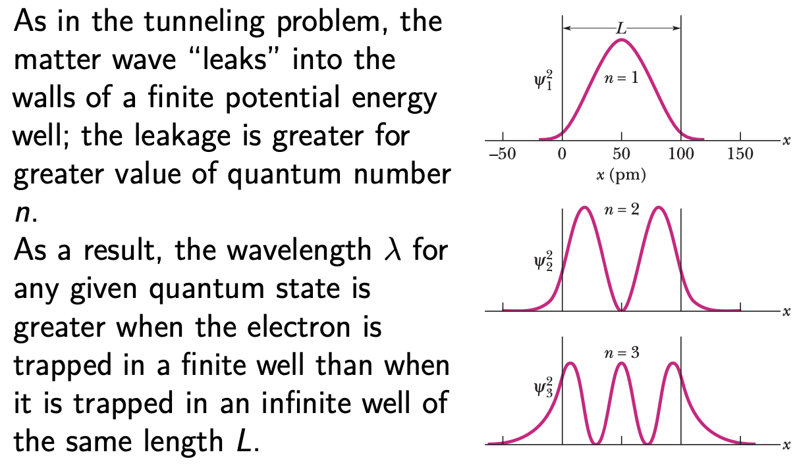
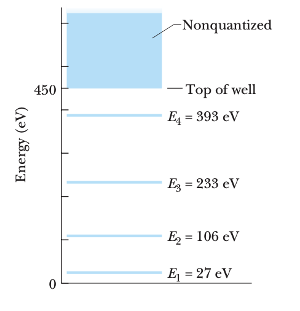
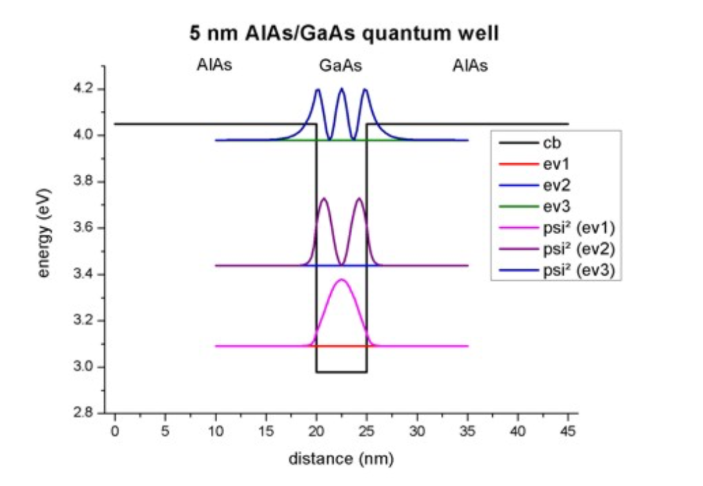
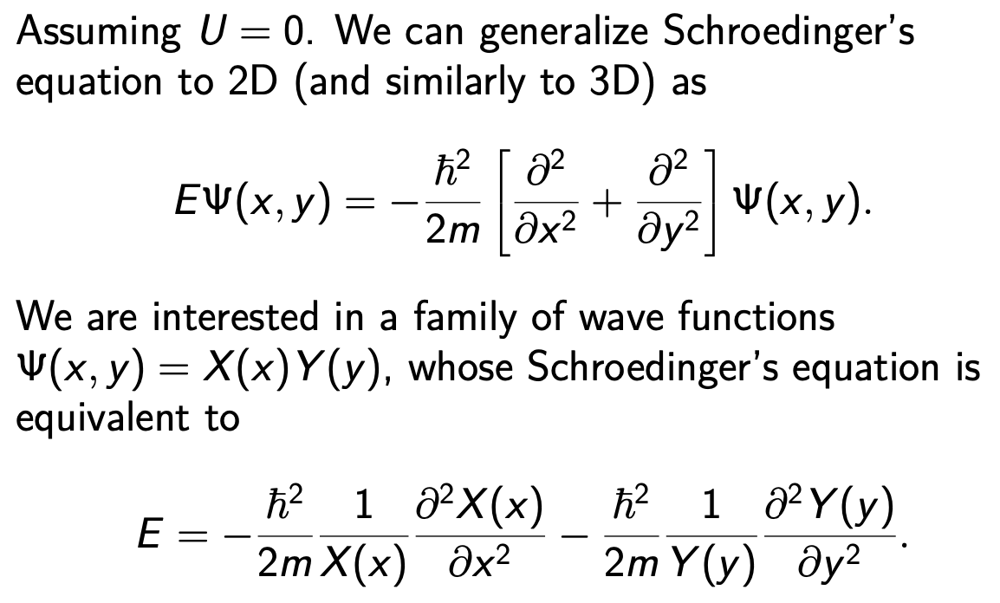
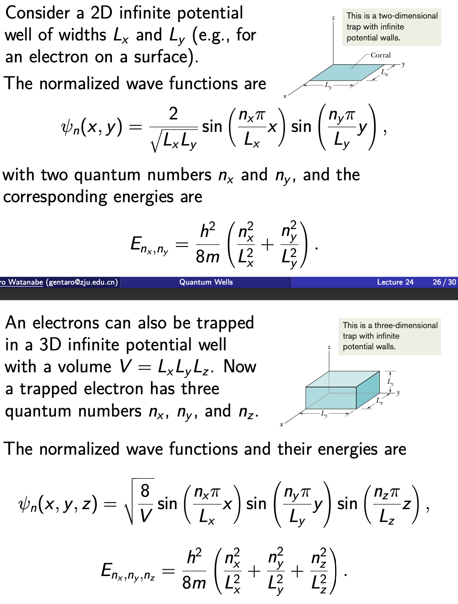
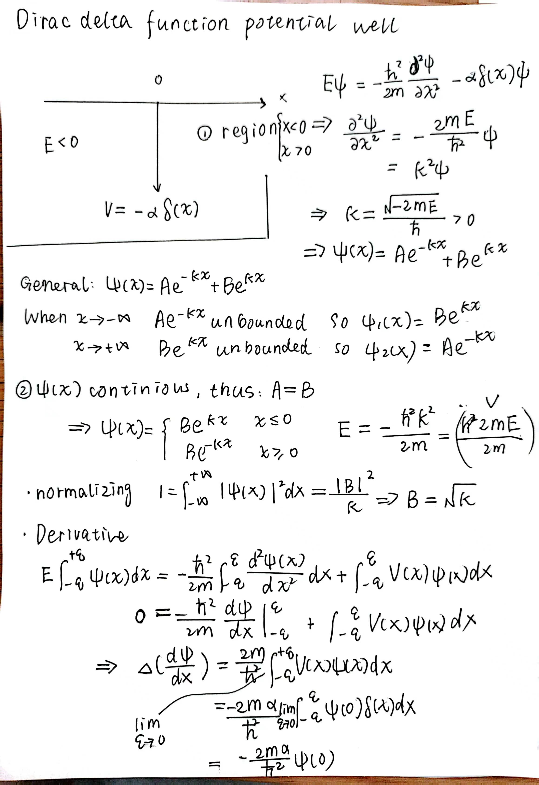
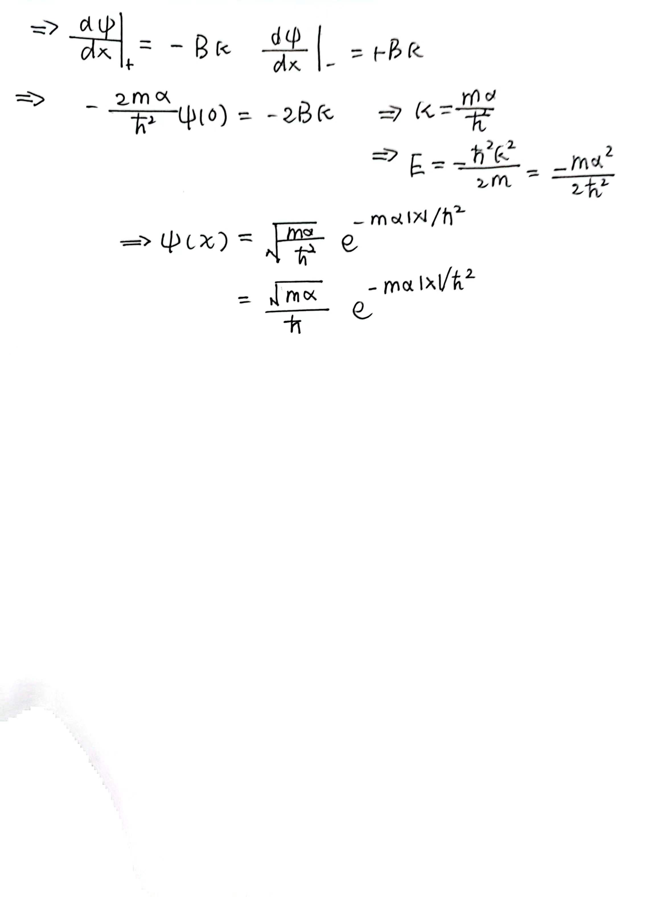

量子阱（Quantum Wells）¶
Overview
本讲涵盖波的限制与量子化、一维无限势阱、有限势阱、半导体量子阱以及高维薛定谔方程。
引言：波的限制与量子化¶
类比：弦上的波
在拉紧的弦上：
| 波类型 | 频率特性 |
|---|---|
| 行波（长弦） | 可以有任意频率 |
| 驻波（有限长弦） | 只能有离散频率 |
限制原理
将波限制在有限空间内会导致量子化 —— 波只能存在于离散状态，每个状态有确定的频率。
这一观察适用于所有类型的波，包括物质波。对于物质波，处理粒子的能量 E 比波的频率 \(f\) 更方便。
自由粒子¶
考虑沿正 \(x\) 方向运动且不受力的电子（自由粒子）的物质波：
特点
能量可以是任何合理的值，就像无限长弦上的行波可以有任何频率一样。
束缚粒子¶
考虑原子中的电子（如价电子）：
特点
电子被库仑力束缚在原子内，是束缚粒子。
它只能存在于离散状态中，每个状态有离散的能量 E。
这很像有限长弦的离散状态和量子化频率。
限制原理
波的限制导致量子化 —— 即离散状态和离散能量的存在。
一维无限势阱¶
考虑被限制在一维电子阱（有限空间区域）中的非相对论电子。

一维阱中的驻波¶
通过与有限长弦上驻波的类比来分析：
弦的驻波
- 两端是刚性支撑，是节点（弦始终静止的点）
- 弦只能处于长度 \(L\) 等于半波长整数倍的状态
弦只能处于满足以下条件的状态：
对于第 \(n\) 态，弦在位置 \(x\)（\(0 \leq x \leq L\)）处的横向位移：
其中 \(A\) 是驻波振幅。
推导
对于第 \(n\) 态：\(\lambda_n = \frac{2L}{n}\)
因此：\(\sin kx = \sin\frac{2\pi}{\lambda_n}x = \sin\left(\frac{n\pi}{L}x\right)\)
对于阱中的电子，横向位移提升为波函数 \(\psi_n(x)\)。
探测概率¶
经典预期
电子在无限势阱中任何位置被探测到的概率密度恒定。
量子力学预测
对于给定的 \(n\)，概率密度为： \(\(p_n(x) = |\psi_n(x)|^2 = |A|^2 \sin^2\left(\frac{n\pi}{L}x\right)\)\)
注意
如果不满足 \(L = \frac{n\lambda}{2}\)，就不能形成稳定的波！
常数 \(A\)（在相位因子内）由归一化条件确定：
因此：\(A = \sqrt{2/L}\)
被阱束缚电子的能量¶
电子的德布罗意波长定义为：
其中 \(K = \frac{p^2}{2m}\) 是非相对论电子的动能。
中心区域
对于在中心区域（\(U = 0\)）运动的电子，总（机械）能量 \(E\) 等于动能 \(K\)。
能量量子化
其中 \(\lambda_n = \frac{2L}{n}\)
重要结论
- 更窄的阱（更小的 \(L\)）\(\Rightarrow\) \(E_n\) 更高
- 正整数 \(n\) 是电子量子态的量子数

基态与零点能¶
基态
最低能级 \(E_1\)（量子数 \(n = 1\)）对应的量子态称为电子的基态。
为什么 \(n = 0\) 不允许？
选择 \(n = 0\) 确实会给出更低的能量（零）。
然而，相应的概率密度 \(|\psi|^2 = 0\)，这只能理解为阱中没有电子。
因此 \(n = 0\) 不是可能的量子数。
零点能
量子物理的一个重要结论：
受限系统必须始终有一定的非零最小能量，称为零点能。
光子的吸收与发射¶
跃迁
电子可以通过吸收或发射光子被激发或退激发： \(\(\hbar\omega = \frac{hc}{\lambda} = \Delta E = E_{高} - E_{低}\)\)
被阱束缚电子的波函数¶
求解一维无限势阱（宽度 \(L\)）中电子的含时薛定谔方程，可以写出解：
边界条件
上述行波不满足边界条件 \(\psi_n(0) = \psi_n(L) = 0\)。
合适的解只能是行波函数的某些线性组合：
常数 \(A\) 待定。
类比
波函数 \(\psi_n(x)\) 与弦在刚性支撑间的驻波位移函数 \(y_n(x)\) 形式相同。
对应原理
对于足够大的 \(n\)，在粗粒度尺度上，探测概率在整个阱中变得越来越均匀。
这是对应原理的一个例子：在足够大的量子数下，量子物理的预测与经典物理平滑过渡。
有限势阱中的电子¶
我们可以把被困在无限势阱中的电子想象成驻物质波。解必须在无限势壁处为零。
有限势阱的差异
对于有限势壁，弦上波与物质波的类比失效。
物质波的节点不再存在于 \(x = 0\) 和 \(x = L\) 处。
量子隧穿
波函数可以穿透势壁进入经典禁区。

边界条件
- \(\Psi(-\infty) \to 0\)
- \(\Psi(+\infty) \to 0\)
- \(\Psi(0^-) = \Psi(0^+)\)
- \(\Psi(L^-) = \Psi(L^+)\)
- \(\Psi'(0^-) = \Psi'(0^+)\)
- \(\Psi'(L^-) = \Psi'(L^+)\)

有限势阱中电子的能量¶
能量比较
因此，任何给定态的能量 \(E \approx (h/\lambda)^2/(2m)\) 在有限势阱中比在无限势阱中更低。

连续谱
能量大于阱深的电子（\(E > U_0\)）能量太高，无法被有限势阱束缚。
因此，势阱顶部以上存在连续的能量谱；高能电子不受限，能量不量子化。
半导体量子阱¶
应用
半导体结构类似于有限势阱。

高维薛定谔方程¶

分离变量
方程形如 \(E = F(x) + G(y)\)，只有当 \(F(x) = E_1\) 且 \(G(y) = E - E_1\)（即每个函数各自为常数）时才能满足。
因此，分离变量将多变量偏微分方程分解为一组独立的常微分方程（ODE）。
我们可以分别求解 \(X(x)\) 和 \(Y(y)\) 的 ODE。原方程的波函数就是它们的乘积 \(X(x)Y(y)\)。
思考
什么情况下 \(\Psi(x,y)\) 可以写成 \(\Psi(x,y) = X(x)Y(y)\) 的形式，什么情况下不能？
历史
分离变量法最早由 L'Hospital 在 1750 年使用。
它在求解数学物理中的方程时特别有用，如拉普拉斯方程、亥姆霍兹方程和薛定谔方程。
适用条件
成功应用需要选择适当的坐标系，且可能根本无法实现。特别是当：
- \(U(x,y) = U_x(x) + U_y(y)\)
- 或在球坐标中的中心势：\(U(r,\theta,\phi) = V(r)\)
二维和三维无限势阱¶

狄拉克 δ 函数势阱¶


δ 函数势
狄拉克 δ 函数势是一个理想化模型，用于表示在某点处的极端局域化势能。
创建日期: 2023年12月20日 23:31:34